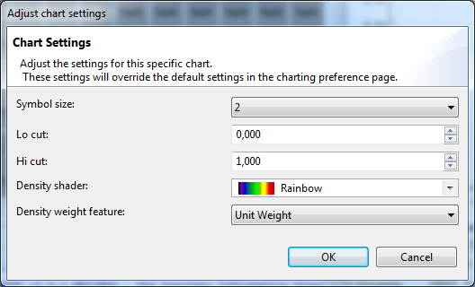

To adjust the Density Chart settings, go to the chart legend and click the Adjust settings button 
. The following dialog will pop up:

| Transparency of non-selected points | The transparency you wish to give to the points that aren't selected. |
| Default symbol size | The size of the points. |
| Default color for chart points | The color in which the points will be drawn on the curve. |
| Default symbol style | The symbol that will represent the spoints. E.g. full or open circles or squares. Open symbols are useful to see the density of points but will only show when the points are not connected. |
| Connect points | You can select this if you want the points to be connected. |